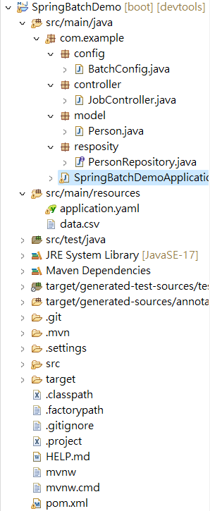

Spring Boot 3 + Spring Batch 5
Spring Boot 3 + Spring Batch 5
overview

圖片複製於：https://docs.spring.io/spring-batch/docs/current/reference/html/index-single.html#business-scenarios
-
Batch: A batch refers to a collection of related tasks or operations that are executed together. It typically involves processing a large amount of data in a systematic and efficient manner.
-
Job: In Spring Batch, a job represents a single batch processing unit. It consists of one or more steps that are executed sequentially. A job encapsulates the entire batch processing logic and provides a way to manage and monitor the execution of the batch.
-
Step: A step is a single unit of work within a job. It represents a specific task or operation that needs to be performed during the batch processing. Each step typically consists of an
ItemReader,ItemProcessor, andItemWritercomponent, which collectively handle the input, processing, and output of data for that step. -
ItemReader: An
ItemReaderis responsible for reading data from a data source. It provides a way to retrieve data in chunks or one item at a time. TheItemReaderinterface defines theread()method, which returns the next item from the data source ornullif there is no more data. -
ItemWriter: An
ItemWriteris responsible for writing the processed data to a desired destination, such as a database, file, or API. It receives data in chunks or one item at a time from theItemProcessorand performs the necessary actions to persist or transmit the data. -
ItemProcessor: An
ItemProcessoris an optional component that performs any necessary processing on the input data before it is written by theItemWriter. It allows you to transform or filter the data based on your business logic. TheItemProcessorinterface defines theprocess()method, which takes an input item and returns a processed item ornullto indicate that the item should be skipped. -
JobLauncher: The
JobLauncheris responsible for starting the execution of a job. It receives a job instance and launches it, triggering the execution of all the steps within the job. TheJobLauncherinterface defines therun()method, which takes a job instance and returns aJobExecutionobject representing the status and result of the job execution.
Demo
情境說明
有一個 CSV 檔案，內容記錄著人員的姓名與電子信箱，需要將資料同步到自己的 MySQL DB中。
Project Structure
完整代碼 https://github.com/aweit-zhu/SpringBatchDemo

docker-compose.yml
services:
mysql:
image: mysql:5
container_name: mysql
restart: always
environment:
MYSQL_ROOT_PASSWORD: password
MYSQL_DATABASE: cookbook
MYSQL_USER: admin
MYSQL_PASSWORD: password
ports:
- 3306:3306
volumes:
- ./data:/var/lib/mysql
phpmyadmin:
image: phpmyadmin/phpmyadmin
container_name: phpmyadmin
restart: always
environment:
PMA_HOST: mysql
PMA_PORT: 3306
MYSQL_ROOT_PASSWORD: password
ports:
- 8989:80
depends_on:
- mysql
pom.xml
<?xml version="1.0" encoding="UTF-8"?>
<project xmlns="http://maven.apache.org/POM/4.0.0"
xmlns:xsi="http://www.w3.org/2001/XMLSchema-instance"
xsi:schemaLocation="http://maven.apache.org/POM/4.0.0 https://maven.apache.org/xsd/maven-4.0.0.xsd">
<modelVersion>4.0.0</modelVersion>
<parent>
<groupId>org.springframework.boot</groupId>
<artifactId>spring-boot-starter-parent</artifactId>
<version>3.1.3</version>
<relativePath /> <!-- lookup parent from repository -->
</parent>
<groupId>com.example</groupId>
<artifactId>spring-batch-demo</artifactId>
<version>1.0.0</version>
<name>SpringBatchDemo</name>
<description>spring-batch-demo</description>
<properties>
<java.version>17</java.version>
</properties>
<dependencies>
<dependency>
<groupId>org.springframework.boot</groupId>
<artifactId>spring-boot-starter-batch</artifactId>
</dependency>
<dependency>
<groupId>org.springframework.boot</groupId>
<artifactId>spring-boot-starter-data-jpa</artifactId>
</dependency>
<dependency>
<groupId>org.springframework.boot</groupId>
<artifactId>spring-boot-starter-web</artifactId>
</dependency>
<dependency>
<groupId>org.springframework.boot</groupId>
<artifactId>spring-boot-devtools</artifactId>
<scope>runtime</scope>
<optional>true</optional>
</dependency>
<dependency>
<groupId>com.mysql</groupId>
<artifactId>mysql-connector-j</artifactId>
<scope>runtime</scope>
</dependency>
<dependency>
<groupId>org.projectlombok</groupId>
<artifactId>lombok</artifactId>
<optional>true</optional>
</dependency>
<dependency>
<groupId>org.springframework.boot</groupId>
<artifactId>spring-boot-starter-test</artifactId>
<scope>test</scope>
</dependency>
<dependency>
<groupId>org.springframework.batch</groupId>
<artifactId>spring-batch-test</artifactId>
<scope>test</scope>
</dependency>
<!-- Other dependencies -->
<dependency>
<groupId>com.fasterxml.jackson.datatype</groupId>
<artifactId>jackson-datatype-joda</artifactId>
<version>2.9.4</version>
</dependency>
<dependency>
<groupId>org.jadira.usertype</groupId>
<artifactId>usertype.core</artifactId>
<version>6.0.1.GA</version>
</dependency>
</dependencies>
<build>
<plugins>
<plugin>
<groupId>org.springframework.boot</groupId>
<artifactId>spring-boot-maven-plugin</artifactId>
<configuration>
<excludes>
<exclude>
<groupId>org.projectlombok</groupId>
<artifactId>lombok</artifactId>
</exclude>
</excludes>
</configuration>
</plugin>
</plugins>
</build>
</project>
建立 data.csv 於 src/main/resources 資料夾中
name,email
Aweit,aweit@example.com
application.yaml
spring:
batch:
jdbc:
initialize-schema: always
job:
enabled: false
datasource:
url: jdbc:mysql://localhost:3306/spring-batch
username: admin
password: password
driver-class-name: com.mysql.cj.jdbc.Driver
jpa:
hibernate:
ddl-auto: update
show-sql: false
properties:
hibernate:
format_sql: true
database-platform: org.hibernate.dialect.MySQL8Dialect
建立 Model
@Data
@AllArgsConstructor
@NoArgsConstructor
@ToString
@Builder
@Entity
@Table
public class Person {
@Id
@GeneratedValue(strategy = GenerationType.IDENTITY)
private long id;
@Column
private String name;
@Column
private String email;
}
建立 Reposity
public interface PersonRepository extends JpaRepository<Person, Long>{
}
建立 Batch Config
package com.example.config;
import javax.sql.DataSource;
import org.springframework.batch.core.Job;
import org.springframework.batch.core.Step;
import org.springframework.batch.core.job.builder.JobBuilder;
import org.springframework.batch.core.launch.support.RunIdIncrementer;
import org.springframework.batch.core.repository.JobRepository;
import org.springframework.batch.core.step.builder.StepBuilder;
import org.springframework.batch.item.ItemProcessor;
import org.springframework.batch.item.ItemReader;
import org.springframework.batch.item.ItemWriter;
import org.springframework.batch.item.data.RepositoryItemWriter;
import org.springframework.batch.item.file.FlatFileItemReader;
import org.springframework.batch.item.file.mapping.BeanWrapperFieldSetMapper;
import org.springframework.batch.item.file.mapping.DefaultLineMapper;
import org.springframework.batch.item.file.transform.DelimitedLineTokenizer;
import org.springframework.beans.factory.annotation.Autowired;
import org.springframework.context.annotation.Bean;
import org.springframework.context.annotation.Configuration;
import org.springframework.core.io.ClassPathResource;
import org.springframework.transaction.PlatformTransactionManager;
import com.example.model.Person;
import com.example.resposity.PersonRepository;
@Configuration
public class BatchConfig {
@Autowired
PersonRepository personRepository;
@Bean
public ItemReader<Person> csvReader() {
FlatFileItemReader<Person> reader = new FlatFileItemReader<>();
reader.setResource(new ClassPathResource("data.csv"));
reader.setLinesToSkip(1);
reader.setLineMapper(new DefaultLineMapper<Person>() {
{
setLineTokenizer(new DelimitedLineTokenizer() {
{
setNames("name", "email");
}
});
setFieldSetMapper(new BeanWrapperFieldSetMapper<Person>() {
{
setTargetType(Person.class);
}
});
}
});
return reader;
}
@Bean
public ItemProcessor<Person, Person> personProcessor() {
return person -> {
person.setName(person.getName().toUpperCase());
return person;
};
}
@Bean
public ItemWriter<Person> dbWriter(DataSource dataSource) {
RepositoryItemWriter<Person> writer = new RepositoryItemWriter<>();
writer.setRepository(personRepository);
writer.setMethodName("save");
return writer;
}
@Bean
public Step step(ItemReader<Person> reader, ItemProcessor<Person, Person> processor, ItemWriter<Person> writer,
JobRepository jobRepository, PlatformTransactionManager transactionManager) {
return new StepBuilder("myStep", jobRepository)
.<Person, Person>chunk(10, transactionManager)
.reader(reader)
.processor(processor)
.writer(writer)
.build();
}
@Bean
public Job job(Step step, JobRepository jobRepository) {
return new JobBuilder("myJob", jobRepository)
.incrementer(new RunIdIncrementer())
.flow(step)
.end()
.build();
}
}
建立 Controller
@RestController
@RequestMapping("/jobs")
public class JobController {
@Autowired
private JobLauncher jobLauncher;
@Autowired
private Job job;
@GetMapping("/import")
public void importCsvToDBJob() {
JobParameters jobParameters = new JobParametersBuilder()
.addLong("startAt", System.currentTimeMillis()).toJobParameters();
try {
jobLauncher.run(job, jobParameters);
} catch (JobExecutionAlreadyRunningException | JobRestartException | JobInstanceAlreadyCompleteException | JobParametersInvalidException e) {
e.printStackTrace();
}
}
}
測試：http://localhost:8080/jobs/import

Spring Batch + SFTP Server
情境
- 本來是讀取 ClassPath Resources 的檔案，現在要改為讀取 SFTP Server 上的 /upload 資料夾，作為檔案來源。
docker-compose.ayml
services:
sftp-server:
image: atmoz/sftp
volumes:
- ./sftp:/home/user/upload
ports:
- "172.22.103.117:2222:22"
environment:
- SFTP_USERS=user:password:1001
pom.xml
<!--SFTP-->
<dependency>
<groupId>com.jcraft</groupId>
<artifactId>jsch</artifactId>
<version>0.1.55</version>
</dependency>
appication.yaml
sftp:
host: 172.22.103.117
port: 2222
username: user
password: password
SftpUtil.java
package com.example.util;
import java.io.IOException;
import java.io.InputStream;
import java.util.ArrayList;
import java.util.List;
import org.springframework.core.io.InputStreamResource;
import org.springframework.core.io.Resource;
import com.jcraft.jsch.ChannelSftp;
import com.jcraft.jsch.JSch;
import com.jcraft.jsch.JSchException;
import com.jcraft.jsch.Session;
import com.jcraft.jsch.SftpException;
public class SftpUtil {
public static Resource[] getResources(ChannelSftp channelSftp, String remoteFolderPath) throws IOException {
List<Resource> resourceList = new ArrayList<>();
try {
channelSftp.cd(remoteFolderPath);
@SuppressWarnings("unchecked")
List<ChannelSftp.LsEntry> lsEntries = channelSftp.ls(".");
for (ChannelSftp.LsEntry entry : lsEntries) {
if (!entry.getAttrs().isDir()) {
InputStream inputStream = channelSftp.get(entry.getFilename());
Resource resource = new InputStreamResource(inputStream);
resourceList.add(resource);
}
}
} catch (SftpException e) {
throw new IOException("Failed to retrieve resources from the SFTP server", e);
}
return resourceList.toArray(new Resource[0]);
}
}
SftpCOnfig.java
import org.springframework.beans.factory.annotation.Value;
import org.springframework.context.annotation.Bean;
import org.springframework.context.annotation.Configuration;
import com.jcraft.jsch.ChannelSftp;
import com.jcraft.jsch.JSch;
import com.jcraft.jsch.JSchException;
import com.jcraft.jsch.Session;
@Configuration
public class SftpConfig {
@Value("${sftp.host}")
private String sftpHost;
@Value("${sftp.port}")
private int sftpPort;
@Value("${sftp.username}")
private String sftpUsername;
@Value("${sftp.password}")
private String sftpPassword;
@Bean
public ChannelSftp channelSftp() throws JSchException {
JSch jsch = new JSch();
Session session = jsch.getSession(sftpUsername, sftpHost, sftpPort);
session.setPassword(sftpPassword);
session.setConfig("StrictHostKeyChecking", "no");
session.connect();
ChannelSftp channel = (ChannelSftp) session.openChannel("sftp");
channel.connect();
return channel;
}
}
BatchConfig
@Configuration
public class BatchConfig {
...
@Autowired
ChannelSftp channelSftp;
@Bean
public ItemReader<Person> csvReader() throws JSchException, IOException, SftpException{
Resource[] resources = SftpUtil.getResources(channelSftp, "/upload");
FlatFileItemReader<Person> fReader = new FlatFileItemReader<>();
fReader.setLinesToSkip(1);
fReader.setLineMapper(new DefaultLineMapper<Person>() {
{
setLineTokenizer(new DelimitedLineTokenizer() {
{
setNames("name", "email");
}
});
setFieldSetMapper(new BeanWrapperFieldSetMapper<Person>() {
{
setTargetType(Person.class);
}
});
}
});
MultiResourceItemReader<Person> reader = new MultiResourceItemReader<>();
reader.setResources(resources);
reader.setDelegate(fReader);
return reader;
}
}
...
Test
Docker 啟動的 SFTP

SFTP 上傳的檔案
DB資料